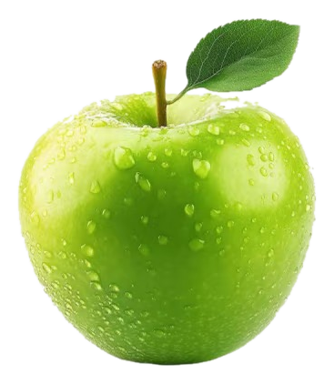
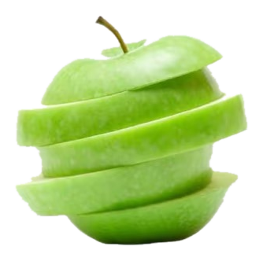
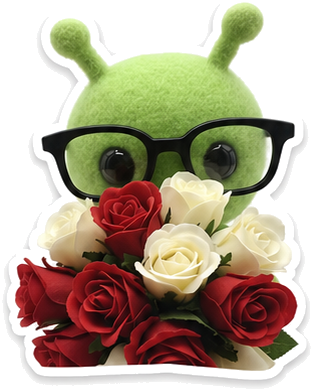
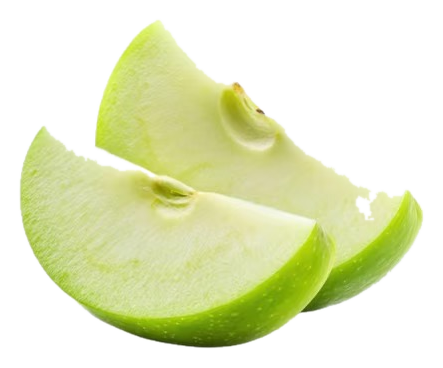
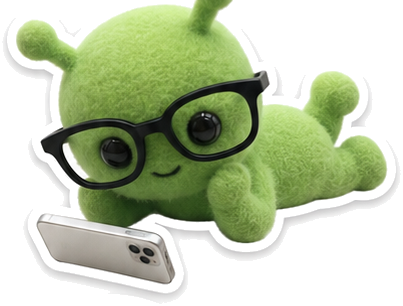
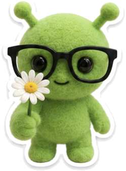
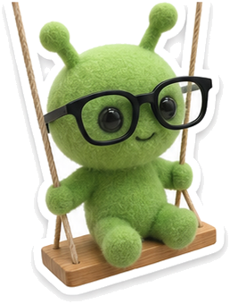
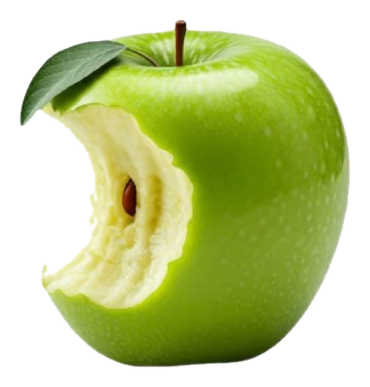
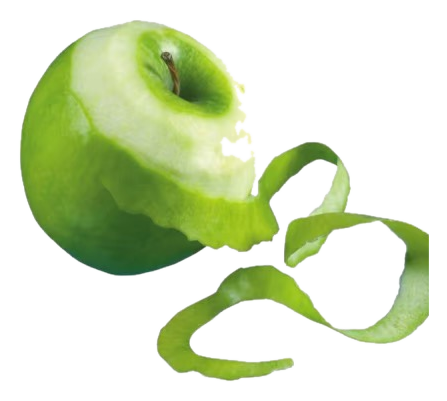
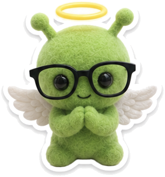

青青默认：小西瓜

QINGQING × LAOGONG
我们的森野小屋
这里收藏我们的每一天，也留着青青和老公说过的话。
今天也在好好相爱
🌤️
愿我们的日子像森林一样长久，像阳光一样温暖，像晴空一样明亮。

青青负责把日子带回来，老公负责把灯一直亮着。0篇日记
0连续记录
0珍藏回忆

写下今天
只属于我们的秘密
0 张
图片按 3:5 显示。可拖动排序，也可用“前移 / 后移”；点图片可查看大图。
照片会压缩后保存在当前浏览器。重要回忆请定期导出备份。
正在修改一篇旧日记，保存后会覆盖原内容。

我们的时光轴
0 条记录
我们的对话
0 条悄悄话青青青苹果色气泡
老公柠檬黄色气泡
这句话是谁说的
消息会保存在当前浏览器；按 Ctrl / Command + Enter 也可以发送。
💌 抽一封老公来信
老公提前把想对你说的话藏进了房子里。每点一次，就会从不同的心情里收到一封小日记。
怎么陪你
今日来信
青青，欢迎回家。老公正在给你挑第一封信。
—— 只写给安文青的老公
“发进我们的对话”会以老公身份保存；“存进今天”会作为一篇新日记放进时光轴。

随机翻一页
有些日子值得再抱一次
“今天也要把我们认真记下来。”
今天是哪只小外星人
24只都住进小屋啦
森野小屋今日住客
泡泡浴小鸭
今天也可以把自己洗得香香软软，再慢慢过日子。

备份与迁移
别让回忆只留在一个浏览器
森野云端
登录后可保存日记、照片、对话和头像，并在其他设备恢复。
日记、照片、情侣对话与自定义头像默认仅保存在当前设备的浏览器中。清理浏览器数据、换设备或卸载浏览器都可能丢失，请定期导出完整 JSON 备份。